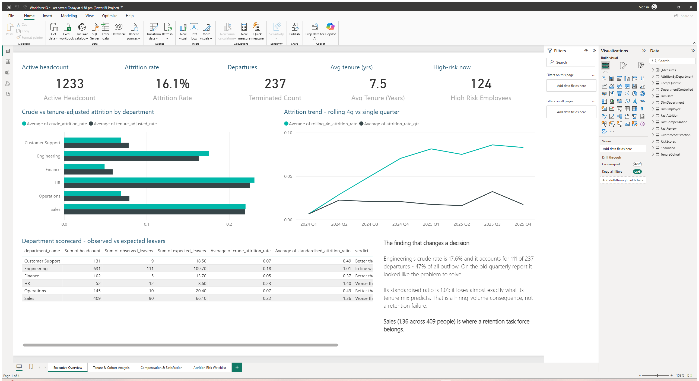
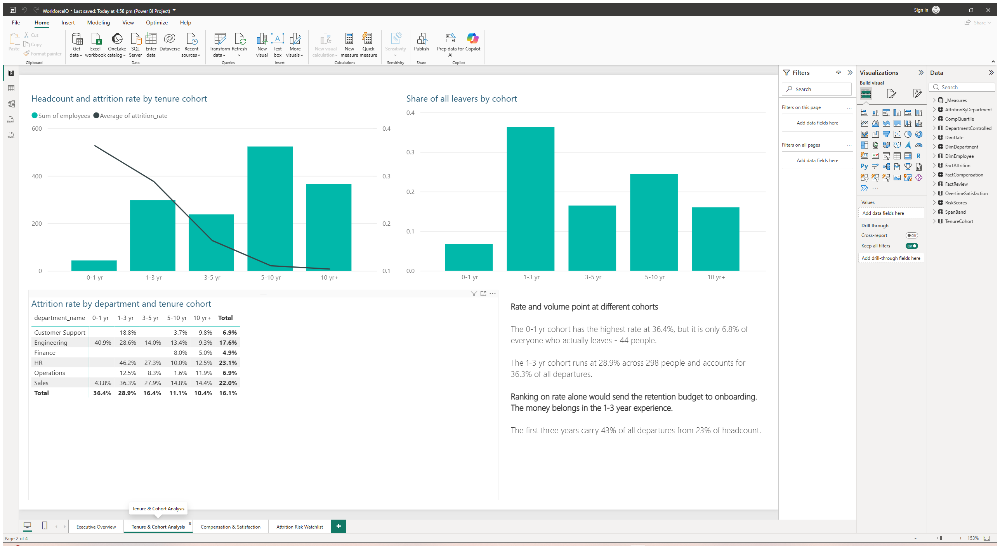
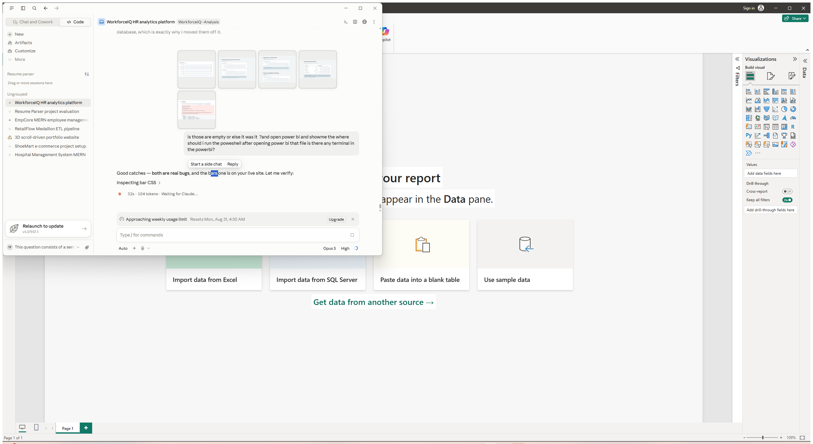
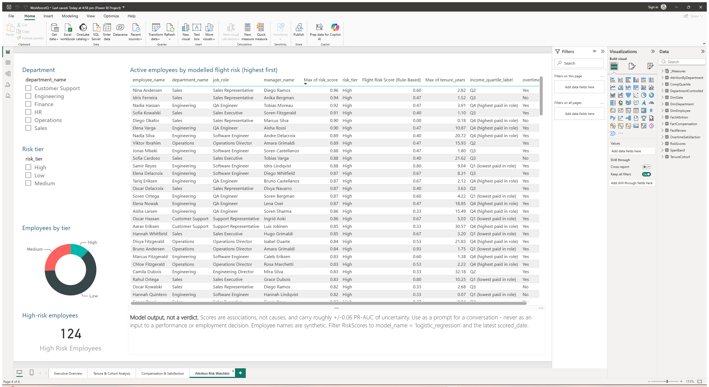

<title>Building WorkforceIQ</title>
<link rel="preconnect" href="https://fonts.googleapis.com">
<link rel="preconnect" href="https://fonts.gstatic.com" crossorigin>
<link rel="stylesheet" href="https://fonts.googleapis.com/css2?family=Archivo:wght@500;600;700&family=IBM+Plex+Sans:wght@400;500;600&family=IBM+Plex+Mono:wght@400;500;600&display=swap">
<style>
:root {
  --ground:      #F2F5F6;
  --surface:     #FFFFFF;
  --surface-alt: #E9EEF0;
  --border:      #D3DDE1;
  --border-firm: #B6C5CB;
  --ink:         #131A1D;
  --ink-soft:    #3D4B51;
  --ink-mute:    #64757C;
  --accent:      #1F5673;
  --accent-soft: #E2EDF3;
  --critical:    #A63A3A;
  --critical-bg: #F6E5E4;
  --warning:     #9A6714;
  --warning-bg:  #F7EDDC;
  --good:        #35674C;
  --good-bg:     #E1EDE6;
  --shadow: 0 1px 2px rgba(19,26,29,.06), 0 6px 18px -10px rgba(19,26,29,.22);
}
@media (prefers-color-scheme: dark) {
  :root:not([data-theme="light"]) {
    --ground:      #0D1315;
    --surface:     #151E21;
    --surface-alt: #1D282C;
    --border:      #26343A;
    --border-firm: #3A4C54;
    --ink:         #E7EFF2;
    --ink-soft:    #B4C4CA;
    --ink-mute:    #8399A1;
    --accent:      #6EB0D3;
    --accent-soft: #17303E;
    --critical:    #E08886;
    --critical-bg: #3A211F;
    --warning:     #DDAE5E;
    --warning-bg:  #362B16;
    --good:        #7FB99A;
    --good-bg:     #1B3128;
    --shadow: 0 1px 2px rgba(0,0,0,.4), 0 8px 22px -12px rgba(0,0,0,.7);
  }
}
:root[data-theme="dark"] {
  --ground:      #0D1315;
  --surface:     #151E21;
  --surface-alt: #1D282C;
  --border:      #26343A;
  --border-firm: #3A4C54;
  --ink:         #E7EFF2;
  --ink-soft:    #B4C4CA;
  --ink-mute:    #8399A1;
  --accent:      #6EB0D3;
  --accent-soft: #17303E;
  --critical:    #E08886;
  --critical-bg: #3A211F;
  --warning:     #DDAE5E;
  --warning-bg:  #362B16;
  --good:        #7FB99A;
  --good-bg:     #1B3128;
  --shadow: 0 1px 2px rgba(0,0,0,.4), 0 8px 22px -12px rgba(0,0,0,.7);
}

* { box-sizing: border-box; }

body {
  margin: 0;
  background: var(--ground);
  color: var(--ink);
  font-family: "IBM Plex Sans", ui-sans-serif, system-ui, sans-serif;
  font-size: 15px;
  line-height: 1.6;
  -webkit-font-smoothing: antialiased;
}

.wrap { max-width: 1120px; margin: 0 auto; padding: 0 24px; }

h1, h2, h3, .display {
  font-family: Archivo, ui-sans-serif, system-ui, sans-serif;
  font-weight: 600;
  letter-spacing: -0.018em;
  text-wrap: balance;
  margin: 0;
}
.num { font-family: "IBM Plex Mono", ui-monospace, monospace; font-variant-numeric: tabular-nums; }

.eyebrow {
  font-family: "IBM Plex Mono", ui-monospace, monospace;
  font-size: 11px; font-weight: 500;
  letter-spacing: .13em; text-transform: uppercase;
  color: var(--ink-mute);
}

/* ---------- masthead ---------- */
.masthead {
  border-bottom: 1px solid var(--border);
  background: var(--surface);
  padding: 44px 0 0;
}
.masthead h1 { font-size: clamp(30px, 4.4vw, 46px); font-weight: 700; line-height: 1.08; }
.masthead .sub {
  color: var(--ink-soft); max-width: 62ch; margin-top: 12px; font-size: 16px;
}
.meta-row {
  display: flex; flex-wrap: wrap; gap: 8px 28px;
  margin-top: 22px; padding-bottom: 26px;
  font-size: 12.5px; color: var(--ink-mute);
}
.meta-row b { color: var(--ink-soft); font-weight: 500; }

/* ---------- kpi strip ---------- */
.kpis {
  display: grid; gap: 1px; background: var(--border);
  grid-template-columns: repeat(auto-fit, minmax(178px, 1fr));
  border-top: 1px solid var(--border);
}
.kpi { background: var(--surface); padding: 18px 20px 20px; }
.kpi .label { font-size: 11.5px; color: var(--ink-mute); letter-spacing: .04em; }
.kpi .val {
  font-family: "IBM Plex Mono", ui-monospace, monospace;
  font-variant-numeric: tabular-nums;
  font-size: 27px; font-weight: 600; line-height: 1.15; margin-top: 6px;
  letter-spacing: -0.02em;
}
.kpi .note { font-size: 11.5px; color: var(--ink-mute); margin-top: 4px; }

/* ---------- nav ---------- */
.navbar {
  position: sticky; top: 0; z-index: 30;
  background: color-mix(in srgb, var(--ground) 88%, transparent);
  backdrop-filter: blur(10px);
  border-bottom: 1px solid var(--border);
}
.navbar-inner { display: flex; gap: 4px; overflow-x: auto; padding: 8px 0; }
.navbar a {
  flex: none; text-decoration: none; color: var(--ink-mute);
  font-size: 12.5px; padding: 6px 11px; border-radius: 5px; white-space: nowrap;
}
.navbar a:hover { color: var(--ink); background: var(--surface-alt); }
.navbar a:focus-visible { outline: 2px solid var(--accent); outline-offset: 1px; }

/* ---------- finding blocks ---------- */
.finding { padding: 52px 0; border-bottom: 1px solid var(--border); scroll-margin-top: 60px; }
.finding-head { display: grid; grid-template-columns: 44px 1fr; gap: 18px; align-items: start; }
.fnum {
  font-family: Archivo, sans-serif; font-weight: 700; font-size: 15px;
  color: var(--accent); border-top: 2px solid var(--accent);
  padding-top: 7px; letter-spacing: .02em;
}
.finding h2 { font-size: clamp(21px, 2.5vw, 27px); line-height: 1.2; }
.qline { color: var(--ink-mute); font-size: 14px; margin-top: 7px; font-style: italic; }
.viewname {
  font-family: "IBM Plex Mono", monospace; font-size: 11.5px;
  color: var(--ink-mute); margin-top: 10px;
}
.viewname code {
  background: var(--surface-alt); padding: 2px 6px; border-radius: 4px; color: var(--accent);
}
.body-col { margin-top: 22px; margin-left: 62px; }
@media (max-width: 700px) {
  .finding-head { grid-template-columns: 1fr; gap: 6px; }
  .fnum { border-top: none; padding-top: 0; }
  .body-col { margin-left: 0; }
}

.card {
  background: var(--surface); border: 1px solid var(--border);
  border-radius: 10px; box-shadow: var(--shadow); padding: 22px;
}
.card + .card { margin-top: 18px; }
.card-title { font-size: 13px; font-weight: 600; letter-spacing: -0.005em; }
.card-note { font-size: 12.5px; color: var(--ink-mute); margin-top: 2px; }

.takeaway {
  margin-top: 18px; padding: 16px 18px; border-radius: 8px;
  background: var(--accent-soft); border-left: 3px solid var(--accent);
  font-size: 14.5px; color: var(--ink);
}
.takeaway b { font-weight: 600; }
.takeaway.neg { background: var(--surface-alt); border-left-color: var(--border-firm); }

/* ---------- chart primitives ---------- */
.rows { display: flex; flex-direction: column; gap: 9px; margin-top: 16px; }
.row { display: grid; grid-template-columns: 132px 1fr 62px; gap: 12px; align-items: center; }
.row .rl { font-size: 13px; color: var(--ink-soft); text-align: right; }
.row .rv {
  font-family: "IBM Plex Mono", monospace; font-variant-numeric: tabular-nums;
  font-size: 13px; font-weight: 500;
}
.track { background: var(--surface-alt); border-radius: 3px; height: 22px; position: relative; overflow: hidden; }
/* Two things here are load-bearing, both learned the hard way:

   1. display:block -- the bar is an <i>, which is inline by default, and
      inline elements ignore width and height outright.

   2. The grow-in effect is a CSS animation on transform, NOT a JS-driven
      width transition. The first version set width to 0% and then filled it
      in from a requestAnimationFrame callback; rAF is throttled to never in a
      backgrounded or zero-size viewport, so every bar stayed at 0% forever
      and the whole page rendered as empty tracks. Correctness must not depend
      on an animation frame firing. The width is now set outright and the
      animation is purely declarative. */
.bar {
  display: block; height: 100%; border-radius: 3px;
  transform-origin: left center;
  animation: bar-in .55s cubic-bezier(.22, .8, .3, 1) both;
}
@keyframes bar-in { from { transform: scaleX(0); } to { transform: scaleX(1); } }
@media (prefers-reduced-motion: reduce) { .bar { animation: none; } }
.bar.a { background: var(--accent); }
.bar.c { background: var(--critical); }
.bar.w { background: var(--warning); }
.bar.g { background: var(--good); }
.bar.n { background: var(--border-firm); }

@media (max-width: 620px) {
  .row { grid-template-columns: 96px 1fr 54px; gap: 8px; }
  .row .rl { font-size: 12px; }
}

/* diverging (SAR) */
.div-chart { margin-top: 18px; }
.div-row { display: grid; grid-template-columns: 132px 1fr 96px; gap: 12px; align-items: center; margin-bottom: 9px; }
.div-track { position: relative; height: 26px; background: var(--surface-alt); border-radius: 3px; }
.div-mid { position: absolute; top: -4px; bottom: -4px; width: 1.5px; background: var(--border-firm); }
.div-bar { position: absolute; top: 4px; bottom: 4px; border-radius: 2px; }
.div-scale {
  display: grid; grid-template-columns: 132px 1fr 96px; gap: 12px;
  font-size: 11px; color: var(--ink-mute); margin-top: 4px;
}
.div-scale-inner { position: relative; height: 14px; }
.div-tick { position: absolute; transform: translateX(-50%); font-family: "IBM Plex Mono", monospace; }
@media (max-width: 620px) {
  .div-row, .div-scale { grid-template-columns: 92px 1fr 74px; gap: 8px; }
}

/* heatmap */
.heat { display: grid; grid-template-columns: 92px repeat(3, 1fr); gap: 6px; margin-top: 16px; }
.heat-h { font-size: 11.5px; color: var(--ink-mute); text-align: center; padding-bottom: 2px; }
.heat-r { font-size: 12.5px; color: var(--ink-soft); display: flex; align-items: center; justify-content: flex-end; padding-right: 4px; text-align: right; }
.cell { border-radius: 7px; padding: 13px 8px; text-align: center; border: 1px solid var(--border); }
.cell .r { font-family: "IBM Plex Mono", monospace; font-variant-numeric: tabular-nums; font-size: 20px; font-weight: 600; letter-spacing: -0.02em; }
.cell .l { font-size: 11px; margin-top: 2px; opacity: .85; }
.cell .n { font-size: 10.5px; color: var(--ink-mute); margin-top: 3px; }

/* line chart */
.linewrap { margin-top: 14px; overflow-x: auto; }
svg { display: block; max-width: 100%; }
.gridline { stroke: var(--border); stroke-width: 1; }
.axis-lab { fill: var(--ink-mute); font-size: 10.5px; font-family: "IBM Plex Mono", monospace; }

/* ---------- table ---------- */
.controls { display: flex; flex-wrap: wrap; gap: 10px; align-items: center; margin-top: 18px; }
select, input[type="search"] {
  font-family: inherit; font-size: 13px; color: var(--ink);
  background: var(--surface); border: 1px solid var(--border-firm);
  border-radius: 6px; padding: 7px 10px;
}
input[type="search"] { min-width: 190px; }
select:focus-visible, input:focus-visible, button:focus-visible { outline: 2px solid var(--accent); outline-offset: 1px; }
.count { font-size: 12.5px; color: var(--ink-mute); margin-left: auto; }

.tablewrap { overflow-x: auto; margin-top: 14px; border: 1px solid var(--border); border-radius: 9px; background: var(--surface); }
table { border-collapse: collapse; width: 100%; font-size: 13px; }
th {
  text-align: left; font-weight: 600; font-size: 11px; letter-spacing: .06em;
  text-transform: uppercase; color: var(--ink-mute);
  padding: 11px 12px; border-bottom: 1px solid var(--border);
  background: var(--surface); position: sticky; top: 0; white-space: nowrap;
}
td { padding: 10px 12px; border-bottom: 1px solid var(--border); white-space: nowrap; }
tbody tr:last-child td { border-bottom: none; }
tbody tr:hover { background: var(--surface-alt); }
td.n { font-family: "IBM Plex Mono", monospace; font-variant-numeric: tabular-nums; }

.pill {
  display: inline-block; font-size: 10.5px; font-weight: 600;
  padding: 2px 8px; border-radius: 20px; letter-spacing: .03em;
}
.pill.High   { background: var(--critical-bg); color: var(--critical); }
.pill.Medium { background: var(--warning-bg);  color: var(--warning); }
.pill.Low    { background: var(--good-bg);     color: var(--good); }

.flags { display: flex; gap: 4px; flex-wrap: wrap; }
.flag {
  font-size: 10px; padding: 1.5px 6px; border-radius: 4px;
  background: var(--surface-alt); color: var(--ink-mute); border: 1px solid var(--border);
}
.flag.on { background: var(--critical-bg); color: var(--critical); border-color: transparent; }

.scorebar { display: flex; align-items: center; gap: 8px; }
.scorebar .mini { width: 46px; height: 5px; background: var(--surface-alt); border-radius: 3px; overflow: hidden; }
.scorebar .mini i { display: block; height: 100%; background: var(--critical); }

/* ---------- model ---------- */
.grid2 { display: grid; gap: 18px; grid-template-columns: repeat(auto-fit, minmax(290px, 1fr)); margin-top: 18px; }
.metric-line { display: flex; justify-content: space-between; align-items: baseline; padding: 8px 0; border-bottom: 1px dashed var(--border); font-size: 13px; }
.metric-line:last-child { border-bottom: none; }
.metric-line span:last-child { font-family: "IBM Plex Mono", monospace; font-variant-numeric: tabular-nums; font-weight: 500; }

/* ---------- footer ---------- */
footer { padding: 44px 0 60px; color: var(--ink-mute); font-size: 13px; }
footer h3 { font-size: 14px; color: var(--ink); margin-bottom: 8px; }
footer p { max-width: 74ch; }
footer a { color: var(--accent); }
.warnbox {
  border: 1px solid var(--border); border-left: 3px solid var(--warning);
  background: var(--warning-bg); color: var(--ink-soft);
  padding: 14px 16px; border-radius: 8px; font-size: 13px; margin-top: 16px;
}
</style>
<style>
.term {
  background: var(--surface-alt); border: 1px solid var(--border);
  border-left: 3px solid var(--accent); border-radius: 8px;
  padding: 14px 16px; overflow-x: auto; margin: 14px 0 0;
  font-family: "IBM Plex Mono", ui-monospace, monospace;
  font-size: 12.5px; line-height: 1.55; color: var(--ink-soft);
  white-space: pre; tab-size: 4;
}
.term code { font: inherit; color: inherit; }
.cmd {
  font-family: "IBM Plex Mono", monospace; font-size: 13px;
  background: var(--ink); color: #E7EFF2; padding: 11px 14px;
  border-radius: 7px; overflow-x: auto; white-space: pre; margin-top: 12px;
}
.cmd::before { content: "$ "; color: var(--accent); }
:root:not([data-theme="light"]) .cmd, :root[data-theme="dark"] .cmd { background: #05090B; }
@media (prefers-color-scheme: dark) { :root:not([data-theme="light"]) .cmd { background: #05090B; } }
.shot {
  width: 100%; height: auto; display: block; border-radius: 8px;
  border: 1px solid var(--border-firm); margin-top: 14px;
}
.badge {
  display: inline-block; font-family: "IBM Plex Mono", monospace;
  font-size: 10.5px; font-weight: 600; padding: 2px 8px; border-radius: 20px;
  background: var(--good-bg); color: var(--good); margin-left: 8px;
  vertical-align: middle;
}
.badge.fail { background: var(--critical-bg); color: var(--critical); }
.buglist { display: flex; flex-direction: column; gap: 10px; margin-top: 16px; }
.bug {
  display: grid; grid-template-columns: 30px 1fr; gap: 12px;
  padding: 13px 15px; border: 1px solid var(--border);
  border-radius: 8px; background: var(--surface);
}
.bug .n {
  font-family: "IBM Plex Mono", monospace; font-size: 12px;
  font-weight: 600; color: var(--critical);
}
.bug b { display: block; font-size: 13.5px; margin-bottom: 3px; }
.bug span { font-size: 13px; color: var(--ink-mute); }
.tool { display: grid; grid-template-columns: 150px 1fr; gap: 12px; padding: 9px 0;
        border-bottom: 1px dashed var(--border); font-size: 13.5px; }
.tool:last-child { border-bottom: none; }
.tool b { font-weight: 600; }
.flow {
  font-family: "IBM Plex Mono", monospace; font-size: 12px; line-height: 1.6;
  background: var(--surface-alt); border: 1px solid var(--border);
  border-radius: 8px; padding: 16px; overflow-x: auto; white-space: pre;
  color: var(--ink-soft); margin-top: 16px;
}
@media (max-width: 620px) { .tool { grid-template-columns: 1fr; gap: 2px; } }
</style>
<header class="masthead"><div class="wrap">
<div class="eyebrow">WorkforceIQ &middot; build walkthrough</div>
<h1>How this was built</h1>
<p class="sub">Every step, every tool, and the real output each command produced. The terminal blocks below are captured stdout from actually running the pipeline &mdash; not prose describing what it would print.</p>
<div class="meta-row"><div><b>10</b> pipeline steps</div><div><b>8</b> analytical SQL views</div><div><b>22</b> DAX measures</div><div><b>13</b> bugs found and fixed</div><div><b>28</b> commits</div></div></div></header>
<nav class="navbar"><div class="wrap navbar-inner"><a href="#tools">Tools</a><a href="#flow">Pipeline</a><a href="#steps">Steps &amp; output</a><a href="#report">The report</a><a href="#results">What we got</a><a href="#bugs">Bugs</a><a href="https://vuday3336.github.io/WorkforceIQ--Analysis/">&larr; Dashboard</a></div></nav>
<main class="wrap">
<section class="finding" id="tools"><div class="finding-head"><div class="fnum">00</div><div><h2>What was installed, and why each one</h2><p class="qline">Eight libraries plus PostgreSQL and Power BI Desktop.</p></div></div><div class="body-col">
<div class="card"><div class="card-title">Chosen for a reason, not by habit</div>
<div class="tool"><b>PostgreSQL 17</b><span>The production database, hosted on Supabase. The brief called for a real relational DB.</span></div>
<div class="tool"><b>DuckDB</b><span>Runs the same <code>.sql</code> files with no server. This is what made the SQL testable in a fast loop, and later proved the two engines agree.</span></div>
<div class="tool"><b>pandas + numpy</b><span>Deterministic transforms. The whole dataset rebuilds byte-identically from a seed.</span></div>
<div class="tool"><b>scikit-learn</b><span>Pipelines keep preprocessing inside cross-validation, which is what prevents the classic scaling leak.</span></div>
<div class="tool"><b>matplotlib</b><span>Static PNGs that render on GitHub without a JS runtime.</span></div>
<div class="tool"><b>nbformat + nbclient</b><span>The notebook is generated <em>and executed</em> by a script, so the committed <code>.ipynb</code> carries real outputs and can never drift from the training code.</span></div>
<div class="tool"><b>psycopg2</b><span>Runs the shipped <code>.sql</code> files against the live database, so the files themselves are what gets tested.</span></div>
<div class="tool"><b>Power BI Desktop</b><span>PBIP/TMDL is Microsoft's text project format: diffable and reviewable. A <code>.pbix</code> is an opaque binary.</span></div>
<div class="tool"><b>Vanilla HTML/CSS/JS</b><span>No framework, no build step, no CDN. One self-contained file GitHub Pages serves directly.</span></div>
<div class="tool"><b>PowerShell</b><span>Power BI Desktop has no CLI, so a Win32 window capture was the only way to get screenshots.</span></div>
</div>
<div class="card"><div class="card-title">Actual versions used</div><div class="card-note">Output of importing every dependency.</div>
<pre class="term"><code>Python       3.13.14
pandas       3.0.5
numpy        2.5.2
scikit-learn 1.9.0
duckdb       1.5.5
matplotlib   3.11.1
psycopg2     2.9.12
nbformat     5.11.1</code></pre>
</div></div></section>
<section class="finding" id="flow"><div class="finding-head"><div class="fnum">01</div><div><h2>The pipeline, end to end</h2><p class="qline">One CSV in, four deliverables out.</p></div></div><div class="body-col"><div class="card">
<div class="flow">data/raw/ibm_hr_attrition.csv        1,470 real employees, one dateless snapshot
        |
        |  build_dataset.py           normalise + synthesise the time dimension
        v
data/processed/*.csv                 6 tables, 23,645 rows, deterministic
        |
        +--&gt; schema.sql + seed_data.sql ------&gt; PostgreSQL (Supabase, live)
        |         7 tables, FKs, checks              + rls_policies.sql
        |
        +--&gt; sql/views/*.sql ------------------&gt; 8 analytical views
        |         window functions, CTEs,             verified identical on
        |         indirect standardisation            Postgres AND DuckDB
        |
        +--&gt; train_attrition_model.py ---------&gt; attrition_risk_scores
        |         features read FROM the views        1,233 employees scored
        |
        +--&gt; build_powerbi.py -----------------&gt; powerbi/ (PBIP + TMDL)
        |         14 tables, 22 DAX measures          4 pages, 23 visuals
        |
        +--&gt; build_dashboard.py ---------------&gt; docs/index.html
                  results inlined                    GitHub Pages</div>
</div></div></section>
<section class="finding" id="steps"><div class="finding-head"><div class="fnum">02</div><div><h2>Every step, and what it printed</h2><p class="qline">Run in this order &mdash; the model must be scored before the seed file is generated, or the seed ships without the watchlist.</p></div></div><div class="body-col">
<div class="card"><div class="card-title">1 &middot; Build the dataset<span class="badge">exit 0</span></div>
<div class="card-note">Normalises the flat 1,470-row IBM snapshot into six tables and synthesises the time dimension the source has no trace of. Deterministic: a fixed seed plus a per-employee SHA-256 hash means this reproduces byte-for-byte.</div>
<div class="cmd">python generators/build_dataset.py</div>
<pre class="term"><code>departments                    6 rows
employees                  1,470 rows
compensation_history       7,863 rows
performance_reviews        7,147 rows
attrition_events             237 rows
dim_date                   4,383 rows

base attrition rate  : 0.1612
departments          : 6
distinct managers    : 121
employees w/o manager: 6
comp rows / employee : 5.35
review rows / emp    : 4.86</code></pre>
</div>
<div class="card"><div class="card-title">2 &middot; Train and score the model<span class="badge">exit 0</span></div>
<div class="card-note">Trains logistic regression and a random forest, compares them on cross-validated PR-AUC, then scores every active employee. Runs BEFORE the seed file, because the seed embeds the scores it produces.</div>
<div class="cmd">python generators/train_attrition_model.py</div>
<pre class="term"><code>rows 1470   leavers 237   base rate 0.1612
train 1102   test 368   test leavers 59

--- Logistic Regression ---
              precision    recall  f1-score   support

      Stayed       0.92      0.77      0.84       309
        Left       0.35      0.66      0.46        59

    accuracy                           0.75       368
   macro avg       0.64      0.72      0.65       368
weighted avg       0.83      0.75      0.78       368

ROC-AUC 0.7392   PR-AUC 0.4797
confusion matrix [[tn fp][fn tp]]:
[[238  71]
 [ 20  39]]

--- Random Forest ---
              precision    recall  f1-score   support

      Stayed       0.87      0.97      0.91       309
        Left       0.57      0.22      0.32        59

    accuracy                           0.85       368
   macro avg       0.72      0.59      0.62       368
weighted avg       0.82      0.85      0.82       368

ROC-AUC 0.7494   PR-AUC 0.4058
confusion matrix [[tn fp][fn tp]]:
[[299  10]
 [ 46  13]]
Logistic Regression 5-fold PR-AUC 0.5069 +/- 0.0646
Random Forest 5-fold PR-AUC 0.5082 +/- 0.0351

better cross-validated PR-AUC: Random Forest

Top 12 logistic-regression coefficients (standardised features):
                          feature  coefficient  odds_ratio
business_travel_Travel_Frequently        1.301       3.672
             job_role_QA Engineer        0.991       2.695
                 tenure_years_log       -0.970       0.379
                     tenure_years        0.867       2.380
  job_role_Support Representative       -0.831       0.436
            marital_status_Single        0.819       2.268
                         overtime        0.779       2.180
            department_name_Sales        0.771       2.161
    job_role_Sales Representative        0.646       1.908
                   monthly_income       -0.563       0.570
    business_travel_Travel_Rarely        0.552       1.736
          income_pct_rank_in_role        0.529       1.698

Permutation importance (drop in PR-AUC when shuffled), top 10:
                 feature  importance    std
        tenure_years_log      0.2199 0.0298
                overtime      0.1784 0.0411
          monthly_income      0.1022 0.0233
            tenure_years      0.0922 0.0449
                job_role      0.0598 0.0234
     pct_vs_role_average      0.0439 0.0157
         department_name      0.0401 0.0243
        job_satisfaction      0.0360 0.0164
environment_satisfaction      0.0332 0.0166
                     age      0.0304 0.0113

wrote 4 charts to D:\Projects\WorkForceIq\docs\charts
logistic_regression: High&gt;=0.677  Medium&gt;=0.449  High tier n=124
random_forest: High&gt;=0.287  Medium&gt;=0.174  High tier n=124
wrote 2466 rows to attrition_risk_scores.csv

rule-based heuristic vs model: r=0.465, top-decile overlap=0.476
wrote docs/model_results.json</code></pre>
</div>
<div class="card"><div class="card-title">3 &middot; Emit the seed SQL<span class="badge">exit 0</span></div>
<div class="card-note">Writes a dependency-free INSERT script so anyone with <code>psql</code> and no Python can build the whole database.</div>
<div class="cmd">python generators/build_seed_sql.py</div>
<pre class="term"><code>wrote D:\Projects\WorkForceIq\sql\seed_data.sql  (1122 KB)</code></pre>
</div>
<div class="card"><div class="card-title">4 &middot; Run the eight views<span class="badge">exit 0</span></div>
<div class="card-note">Executes the exact <code>.sql</code> files that ship to PostgreSQL against DuckDB. This is where every documented figure comes from -- nothing in the docs is hand-typed.</div>
<div class="cmd">python generators/run_views_local.py</div>
<pre class="term"><code>Loading tables and creating views...
  created views from 01_vw_attrition_by_department.sql
  created views from 02_vw_tenure_cohort_attrition.sql
  created views from 03_vw_compensation_percentile.sql
  created views from 04_vw_manager_span_attrition.sql
  created views from 05_vw_overtime_satisfaction_attrition.sql
  created views from 06_vw_department_attrition_controlled.sql
  created views from 07_vw_attrition_risk_watchlist.sql
  created views from 08_vw_dim_employee.sql

==============================================================================
COMPANY HEADLINE
==============================================================================
 total_employees  active_headcount  leavers  crude_attrition_rate
            1470            1233.0    237.0                0.1612

==============================================================================
V1  vw_attrition_by_department -- rolling 4q rate, latest quarter
==============================================================================
 department_name year_quarter  headcount_end  terminations  attrition_rate_qtr  rolling_4q_terminations  rolling_4q_attrition_rate
              HR      2025 Q4             40             1              0.0247                      8.0                     0.1818
           Sales      2025 Q4            319            13              0.0400                     46.0                     0.1349
     Engineering      2025 Q4            520            21              0.0397                     59.0                     0.1082
Customer Support      2025 Q4            122             0              0.0000                      4.0                     0.0329
      Operations      2025 Q4            135             0              0.0000                      4.0                     0.0295
         Finance      2025 Q4             97             0              0.0000                      1.0                     0.0103

==============================================================================
V1  company-wide quarterly trend
==============================================================================
year_quarter  terminations  headcount_end  attrition_rate_qtr
     2024 Q1          18.0         1327.0              0.0137
     2024 Q2          33.0         1325.0              0.0249
     2024 Q3          35.0         1317.0              0.0265
     2024 Q4          29.0         1325.0              0.0220
     2025 Q1          22.0         1312.0              0.0167
     2025 Q2          31.0         1285.0              0.0239
     2025 Q3          34.0         1261.0              0.0267
     2025 Q4          35.0         1233.0              0.0281

==============================================================================
V2  vw_tenure_cohort_attrition
==============================================================================
tenure_cohort  employees  leavers  attrition_rate  share_of_all_leavers  lift_vs_company  avg_tenure_years
       0-1 yr         44     16.0          0.3636                0.0675             2.26              0.50
       1-3 yr        298     86.0          0.2886                0.3629             1.79              1.94
       3-5 yr        238     39.0          0.1639                0.1646             1.02              3.97
      5-10 yr        524     58.0          0.1107                0.2447             0.69              7.07
       10 yr+        366     38.0          0.1038                0.1603             0.64             15.83

==============================================================================
V3  vw_compensation_percentile -- attrition by in-role pay quartile
==============================================================================
 income_quartile_in_role     income_quartile_label  employees  leavers  attrition_rate  avg_monthly_income
                       1  Q1 (lowest paid in role)        370     72.0          0.1946              4481.0
                       2                        Q2        369     62.0          0.1680              5568.0
                       3                        Q3        367     50.0          0.1362              6868.0
                       4 Q4 (highest paid in role)        364     53.0          0.1456              9139.0

==============================================================================
V3  bottom vs top decile of in-role pay
==============================================================================
              band  employees  leavers  attrition_rate
Bottom 10% in role        152     31.0          0.2039
        Middle 80%       1166    185.0          0.1587
   Top 10% in role        152     21.0          0.1382

==============================================================================
V4  vw_attrition_by_span_band
==============================================================================
    span_band  span_band_sort  managers  employees_covered  leavers  attrition_rate  avg_span
  1-5 reports               1        19               79.0     16.0          0.2025       4.2
 6-10 reports               2        39              286.0     40.0          0.1399       7.3
11-15 reports               3        26              343.0     57.0          0.1662      13.2
  16+ reports               4        37              756.0    123.0          0.1627      20.4

==============================================================================
V4  worst-performing managers with a usable sample
==============================================================================
     manager_name department_name  direct_reports  reports_lost  team_attrition_rate     span_band
Soren Castellanos     Engineering              20          11.0               0.5500   16+ reports
  Rosa Fitzgerald              HR              13           7.0               0.5385 11-15 reports
      Diego Ramos           Sales              15           8.0               0.5333 11-15 reports
     Claire Mehta           Sales              19          10.0               0.5263   16+ reports
     Claire Reyes     Engineering               9           4.0               0.4444  6-10 reports
      Andre Nowak     Engineering              14           6.0               0.4286 11-15 reports
    Soren Bergman     Engineering              22           9.0               0.4091   16+ reports
   Leila Krishnan     Engineering              15           6.0               0.4000 11-15 reports

==============================================================================
V5  vw_overtime_satisfaction_attrition -- THE HEADLINE
==============================================================================
overtime_flag satisfaction_bucket  employees  leavers  attrition_rate  company_base_rate  lift_vs_base  has_reliable_sample
          Yes           Low (1-2)        153     56.0          0.3660             0.1612          2.27                    1
          Yes          Medium (3)        121     41.0          0.3388             0.1612          2.10                    1
          Yes            High (4)        142     30.0          0.2113             0.1612          1.31                    1
           No           Low (1-2)        416     56.0          0.1346             0.1612          0.83                    1
           No          Medium (3)        321     32.0          0.0997             0.1612          0.62                    1
           No            High (4)        317     22.0          0.0694             0.1612          0.43                    1

==============================================================================
V5  three-way: overtime x satisfaction x work-life balance
==============================================================================
overtime_flag satisfaction_flag wlb_flag  employees  leavers  attrition_rate
          Yes               Low     Poor         39     16.0          0.4103
          Yes               Low       OK        114     40.0          0.3509
          Yes                OK     Poor         87     26.0          0.2989
          Yes                OK       OK        176     45.0          0.2557
           No               Low     Poor        115     17.0          0.1478
           No                OK     Poor        183     24.0          0.1311
           No               Low       OK        301     39.0          0.1296
           No                OK       OK        455     30.0          0.0659

==============================================================================
V6  standard schedule -- company attrition rate by tenure cohort
==============================================================================
tenure_cohort  employees  leavers  company_cohort_rate
       0-1 yr         44     16.0               0.3636
       1-3 yr        298     86.0               0.2886
       10 yr+        366     38.0               0.1038
       3-5 yr        238     39.0               0.1639
      5-10 yr        524     58.0               0.1107

==============================================================================
V6  vw_department_attrition_controlled -- crude vs tenure-adjusted
==============================================================================
 department_name  headcount  avg_tenure_years  observed_leavers  expected_leavers  crude_attrition_rate  standardised_attrition_ratio  tenure_adjusted_rate  mix_effect                     verdict  has_reliable_sample
              HR         52              5.83              12.0               8.6                0.2308                         1.396                0.2250      0.0058  Worse than tenure predicts                    0
           Sales        409              7.08              90.0              66.1                0.2200                         1.361                0.2194      0.0006  Worse than tenure predicts                    1
     Engineering        631              6.32             111.0             109.7                0.1759                         1.012                0.1632      0.0127     In line with tenure mix                    1
      Operations        145              8.10              10.0              20.4                0.0690                         0.490                0.0791     -0.0101 Better than tenure predicts                    1
Customer Support        131              8.85               9.0              18.5                0.0687                         0.486                0.0783     -0.0096 Better than tenure predicts                    1
         Finance        102             14.95               5.0              13.7                0.0490                         0.366                0.0589     -0.0099 Better than tenure predicts                    1

==============================================================================
V7  vw_attrition_risk_watchlist -- top 15 active employees at risk
==============================================================================
  employee_name department_name             job_role      manager_name  risk_score risk_tier  risk_flag_count  tenure_years     income_quartile_label overtime_flag  job_satisfaction
  Nina Andersen           Sales Sales Representative       Diego Ramos       0.964      High                3          2.82                        Q2           Yes                 1
 Idris Ferreira           Sales Sales Representative     Anika Bergman       0.940      High                3          1.52                        Q3            No                 1
   Nadia Hassan     Engineering          QA Engineer     Tobias Moreau       0.922      High                2          3.91 Q4 (highest paid in role)           Yes                 1
 Sofia Kowalski           Sales      Sales Executive  Soren Fitzgerald       0.913      High                2          1.10                        Q3           Yes                 4
   Diego Okafor           Sales Sales Representative      Marcus Silva       0.904      High                1          0.18 Q4 (highest paid in role)            No                 3
    Elena Varga     Engineering          QA Engineer       Aisha Rossi       0.899      High                2         10.87 Q4 (highest paid in role)           Yes                 1
    Nadia Silva     Engineering    Software Engineer   Andre Delacroix       0.893      High                2         20.72 Q4 (highest paid in role)           Yes                 3
 Viktor Ibrahim      Operations  Operations Director    Amara Grimaldi       0.891      High                2         15.93                        Q2           Yes                 1
    Jonas Mbeki     Engineering    Software Engineer Soren Castellanos       0.884      High                3          1.80                        Q3           Yes                 4
  Sofia Cardoso           Sales      Sales Executive      Tobias Varga       0.883      High                3         21.62                        Q3            No                 1
    Samir Reyes     Engineering    Software Engineer   Idris Lindqvist       0.878      High                4          9.04  Q1 (lowest paid in role)           Yes                 1
  Tariq Eriksen     Engineering          QA Engineer Bruno Castellanos       0.873      High                4          2.12 Q4 (highest paid in role)           Yes                 1
Elena Delacroix     Engineering    Software Engineer   Diego Whitfield       0.873      High                4          8.31                        Q3           Yes                 1
Oscar Delacroix           Sales Sales Representative     Divya Navarro       0.872      High                2          3.63                        Q3           Yes                 4
    Elena Nowak     Engineering          QA Engineer         Lena Osei       0.867      High                2         18.85 Q4 (highest paid in role)           Yes                 1

==============================================================================
V7  watchlist tier distribution
==============================================================================
         model_name risk_tier  employees  avg_score
logistic_regression      High        124     0.7715
logistic_regression    Medium        246     0.5442
logistic_regression       Low        863     0.2137
      random_forest      High        124     0.3754
      random_forest    Medium        246     0.2184
      random_forest       Low        863     0.0946</code></pre>
</div>
<div class="card"><div class="card-title">5 &middot; Export for Power BI<span class="badge">exit 0</span></div>
<div class="card-note">Runs each view and writes the result to CSV. These are not hand-made extracts: the SQL layer still computes every number the report displays.</div>
<div class="cmd">python generators/export_for_powerbi.py</div>
<pre class="term"><code>DimDate                     4383 rows  &lt;- dim_date
  DimDepartment                  6 rows  &lt;- departments
  DimEmployee                 1470 rows  &lt;- vw_dim_employee
  FactAttrition                237 rows  &lt;- attrition_events
  FactCompensation            7863 rows  &lt;- compensation_history
  FactReview                  7147 rows  &lt;- performance_reviews
  RiskScores                  2466 rows  &lt;- attrition_risk_scores
  AttritionByDepartment         48 rows  &lt;- vw_attrition_by_department
  TenureCohort                   5 rows  &lt;- vw_tenure_cohort_attrition
  CompQuartile                   4 rows  &lt;- vw_attrition_by_comp_quartile
  OvertimeSatisfaction           6 rows  &lt;- vw_overtime_satisfaction_attrition
  SpanBand                       4 rows  &lt;- vw_attrition_by_span_band
  DepartmentControlled           6 rows  &lt;- vw_department_attrition_controlled

  13 tables, 23,645 rows -&gt; data/powerbi</code></pre>
</div>
<div class="card"><div class="card-title">6 &middot; Generate the Power BI project<span class="badge">exit 0</span></div>
<div class="card-note">Introspects column types from the live views and emits the TMDL semantic model plus the report visuals. The model cannot drift from the schema -- change a view, re-run, and it follows.</div>
<div class="cmd">python generators/build_powerbi.py</div>
<pre class="term"><code>DimDate.tmdl  (8 columns from dim_date)
  DimDepartment.tmdl  (3 columns from departments)
  DimEmployee.tmdl  (38 columns from vw_dim_employee)
  FactAttrition.tmdl  (5 columns from attrition_events)
  FactCompensation.tmdl  (6 columns from compensation_history)
  FactReview.tmdl  (9 columns from performance_reviews)
  RiskScores.tmdl  (5 columns from attrition_risk_scores)
  AttritionByDepartment.tmdl  (14 columns from vw_attrition_by_department)
  TenureCohort.tmdl  (8 columns from vw_tenure_cohort_attrition)
  CompQuartile.tmdl  (6 columns from vw_attrition_by_comp_quartile)
  OvertimeSatisfaction.tmdl  (9 columns from vw_overtime_satisfaction_attrition)
  SpanBand.tmdl  (7 columns from vw_attrition_by_span_band)
  DepartmentControlled.tmdl  (14 columns from vw_department_attrition_controlled)
  Measures.tmdl  (22 DAX measures)
wrote report.json: 4 pages, 23 visuals

wrote PBIP semantic model to powerbi\WorkforceIQ.SemanticModel
wrote powerbi/measures.dax (22 measures)</code></pre>
</div>
<div class="card"><div class="card-title">7 &middot; Build the web dashboard<span class="badge">exit 0</span></div>
<div class="card-note">Inlines the computed results into a single self-contained HTML file. No fetch, no API dependency, works even when the database is paused.</div>
<div class="cmd">python generators/build_dashboard.py</div>
<pre class="term"><code>wrote web/index.html  (71 KB)
wrote docs/index.html  (71 KB)</code></pre>
</div>
<div class="card"><div class="card-title">8 &middot; Load PostgreSQL<span class="badge">exit 0</span></div>
<div class="card-note">Runs schema &rarr; seed &rarr; views &rarr; RLS against the live database. The security step is never skipped, because <code>schema.sql</code> opens with <code>DROP TABLE ... CASCADE</code> and that takes the RLS policies with it.</div>
<div class="cmd">python generators/load_to_postgres.py</div>
<pre class="term"><code>connected

[1/4] schema
  running sql/schema.sql ... ok

[2/4] seed data (this one takes a moment)
  running sql/seed_data.sql ... ok

[3/4] analytical views
  running sql/views/01_vw_attrition_by_department.sql ... ok
  running sql/views/02_vw_tenure_cohort_attrition.sql ... ok
  running sql/views/03_vw_compensation_percentile.sql ... ok
  running sql/views/04_vw_manager_span_attrition.sql ... ok
  running sql/views/05_vw_overtime_satisfaction_attrition.sql ... ok
  running sql/views/06_vw_department_attrition_controlled.sql ... ok
  running sql/views/07_vw_attrition_risk_watchlist.sql ... ok
  running sql/views/08_vw_dim_employee.sql ... ok

[4/4] row-level security and grants
  running sql/rls_policies.sql ... ok

--- verification ---

row counts
  attrition_events  237
  attrition_risk_scores  2466
  compensation_history  7863
  departments  6
  dim_date  4383
  employees  1470
  performance_reviews  7147

department attrition, tenure-controlled
  HR  0.2308  1.396  Worse than tenure predicts
  Sales  0.2200  1.361  Worse than tenure predicts
  Engineering  0.1759  1.012  In line with tenure mix
  Operations  0.0690  0.490  Better than tenure predicts
  Customer Support  0.0687  0.486  Better than tenure predicts
  Finance  0.0490  0.366  Better than tenure predicts

overtime x satisfaction
  Yes  Low (1-2)  153  0.3660  2.27
  Yes  Medium (3)  121  0.3388  2.10
  Yes  High (4)  142  0.2113  1.31
  No  Low (1-2)  416  0.1346  0.83
  No  Medium (3)  321  0.0997  0.62
  No  High (4)  317  0.0694  0.43

watchlist tiers
  logistic_regression  High  124
  logistic_regression  Low  863
  logistic_regression  Medium  246
  random_forest  High  124
  random_forest  Low  863
  random_forest  Medium  246

done</code></pre>
</div>
<div class="card"><div class="card-title">9 &middot; Prove both engines agree<span class="badge">exit 0</span></div>
<div class="card-note">Thirteen checks -- including row-level comparison across all 1,470 employees -- run against PostgreSQL and DuckDB. This caught two silent wrong-answer bugs that raised no error on either engine.</div>
<div class="cmd">python generators/verify_parity.py</div>
<pre class="term"><code>connecting ...
postgres + duckdb ready

  v1_dept_quarter        48 rows   ok
  v2_cohort               5 rows   ok
  v2_cohort_dept         29 rows   ok
  v3_percentile        1470 rows   ok
  v3_quartile             4 rows   ok
  v4_manager            121 rows   ok
  v4_span_band            4 rows   ok
  v5_ot_sat               6 rows   ok
  v5_threeway             8 rows   ok
  v6_controlled           6 rows   ok
  v6_schedule             5 rows   ok
  v7_watchlist         1233 rows   ok
  v8_dim_employee      1470 rows   ok

==================================================================
PARITY OK: all 13 checks identical on PostgreSQL and DuckDB
==================================================================</code></pre>
</div>
</div></section>
<section class="finding" id="report"><div class="finding-head"><div class="fnum">03</div><div><h2>What the Power BI report looks like</h2><p class="qline">Four pages, 23 visuals, generated as text and rendered in Desktop.</p></div></div><div class="body-col">
<div class="card"><div class="card-title">Executive Overview</div><div class="card-note">Headline KPIs, crude vs tenure-adjusted attrition by department, the quarterly trend against its rolling 4-quarter window, and the department scorecard showing observed against expected leavers.</div></div>
<div class="card"><div class="card-title">Tenure &amp; Cohort Analysis</div><div class="card-note">Headcount and attrition rate per cohort, each cohort's share of total outflow, and the department &times; cohort matrix. The highest rate and the largest share of leavers are different cohorts.</div></div>
<div class="card"><div class="card-title">Compensation &amp; Satisfaction</div><div class="card-note">Attrition by in-role pay quartile, the overtime &times; satisfaction cross-segment with lift against the base rate, and the span-of-control chart reporting a negative result.</div></div>
<div class="card"><div class="card-title">Attrition Risk Watchlist</div><div class="card-note">Every active employee ranked by modelled flight risk, with the rule-based heuristic beside the model score, plus department and tier slicers.</div></div>
</div></section>
<section class="finding" id="results"><div class="finding-head"><div class="fnum">04</div><div><h2>What we got out of it</h2><p class="qline">The findings the pipeline actually produced.</p></div></div><div class="body-col">
<div class="card"><div class="card-title">The three findings that matter</div>
<div class="takeaway"><b>Overtime is the lever.</b> Overtime combined with low satisfaction runs at <b>36.6%</b> attrition &mdash; 2.27&times; the company base rate and 5.3&times; the 6.9% of employees with neither factor. The asymmetry is the real insight: overtime alone (21.1%, even among the highly satisfied) is worse than low satisfaction alone (13.5%). High satisfaction does not protect someone being worked too hard.</div>
<div class="takeaway"><b>Engineering does not have a retention problem.</b> Its crude rate is 17.6% and it accounts for 111 of 237 departures &mdash; 47% of all outflow. But its standardised attrition ratio is <b>1.01</b>: it loses almost exactly what its tenure mix predicts. That is a hiring-volume consequence, not a retention failure. <b>Sales, at 1.36 across 409 people, is where a retention task force belongs.</b></div>
<div class="takeaway neg"><b>Span of control explains nothing.</b> Flat at 14.0% / 16.6% / 16.3% across the 6&ndash;10, 11&ndash;15 and 16+ bands. The apparent spike in the smallest band is small-sample noise across 79 people. A negative result, reported as one rather than dressed up.</div>
</div>
<div class="card"><div class="card-title">Deliverables</div><div class="card-note">Everything the pipeline produced.</div>
<div class="tool"><b>Database</b><span>Live PostgreSQL &mdash; 1,470 employees, 2,466 risk scores, 16 views, RLS on 7/7 tables, zero security lints</span></div>
<div class="tool"><b>SQL layer</b><span>8 analytical views, 13/13 parity checks identical across PostgreSQL and DuckDB</span></div>
<div class="tool"><b>Model</b><span>Logistic regression, recall 0.66 on leavers, 5-fold PR-AUC 0.507 &plusmn; 0.065; 1,233 active employees scored</span></div>
<div class="tool"><b>Power BI</b><span>PBIP/TMDL &mdash; 14 tables, 22 DAX measures, 4 pages, 23 visuals</span></div>
<div class="tool"><b>Web dashboard</b><span>Self-contained single file on GitHub Pages</span></div>
<div class="tool"><b>Docs</b><span>Findings write-up, ER diagram, executed notebook, this page</span></div>
</div></div></section>
<section class="finding" id="bugs" style="border-bottom:none"><div class="finding-head"><div class="fnum">05</div><div><h2>Thirteen bugs, found and fixed</h2><p class="qline">Three of these produced wrong numbers while rendering without any error at all.</p></div></div><div class="body-col">
<div class="card"><div class="card-title">The list</div><div class="card-note">This is what the commit history actually documents.</div><div class="buglist">
<div class="bug"><div class="n">01</div><div><b>Tenure jitter applied to active employees only</b><span>Class-dependent leakage. Put every leaver on an exact integer tenure and every stayer just above one, faking a 71% attrition rate in the under-1-year band that the model happily exploited.</span></div></div>
<div class="bug"><div class="n">02</div><div><b>Non-deterministic <code>NTILE(4)</code></b><span>Tied salaries straddling a quartile boundary must be split, and which row went where was arbitrary. PostgreSQL and DuckDB disagreed by one employee.</span></div></div>
<div class="bug"><div class="n">03</div><div><b>Bare <code>::NUMERIC</code> cast</b><span>Arbitrary precision on PostgreSQL, <code>DECIMAL(18,3)</code> on DuckDB. Pay percentiles silently truncated to three decimals on one engine only.</span></div></div>
<div class="bug"><div class="n">04</div><div><b>RLS destroyed by every rebuild</b><span><code>schema.sql</code> drops tables, which drops their policies. All seven tables were briefly exposed with default write grants.</span></div></div>
<div class="bug"><div class="n">05</div><div><b>Dashboard bars rendered empty</b><span>Bar width was applied from a <code>requestAnimationFrame</code> callback, which never fires in a backgrounded or zero-size viewport. Correctness must not depend on an animation frame.</span></div></div>
<div class="bug"><div class="n">06</div><div><b>Mermaid ER diagram would not parse</b><span><code>FK UK</code> and an invented <code>PK_FK</code>. Mermaid allows one key token per attribute.</span></div></div>
<div class="bug"><div class="n">07</div><div><b>Wrong <code>.pbip</code> schema URL, missing report folder</b><span>The project would not open at all.</span></div></div>
<div class="bug"><div class="n">08</div><div><b>Table named <code>Measures</code></b><span>Reserved name in the Tabular object model.</span></div></div>
<div class="bug"><div class="n">09</div><div><b>CompatibilityLevel downgrade 1606 &rarr; 1567</b><span>Tabular rejects downgrades outright, so every regeneration broke a project Desktop had already opened.</span></div></div>
<div class="bug"><div class="n">10</div><div><b><code>DECIMAL</code> columns imported as text</b><span><code>AVERAGE()</code> and <code>MAX()</code> over text broke two visuals, surfacing as a misleading &ldquo;capacity or license issue&rdquo;.</span></div></div>
<div class="bug"><div class="n">11</div><div><b>Shared <code>DataFolder</code> parameter</b><span>The model's only cross-query dependency. Power Query failed all 13 loads with &ldquo;a cyclic reference was encountered&rdquo;.</span></div></div>
<div class="bug"><div class="n">12</div><div><b>Aggregation enum shifted</b><span>Count is 2, not 4. The risk-tier donut plotted <em>maximum employee_id</em> per tier instead of counting employees -- and rendered without error.</span></div></div>
<div class="bug"><div class="n">13</div><div><b>Misleading grand totals</b><span>Averaged six departmental rates into 0.14 against a true 0.1612.</span></div></div>
</div></div>
<div class="takeaway"><b>Two structural changes were made so that class cannot recur silently.</b> An unmapped column type now raises instead of defaulting to string, so a new type fails the build rather than shipping a silently wrong model. And every Power BI projection reference is validated against its query before commit.</div>
</div></section>
</main>
<footer class="wrap"><h3>WorkforceIQ</h3><p><a href="https://vuday3336.github.io/WorkforceIQ--Analysis/">Live dashboard</a> &middot; <a href="https://github.com/Vuday3336/WorkforceIQ--Analysis">Repository</a> &middot; <a href="https://github.com/Vuday3336/WorkforceIQ--Analysis/blob/main/docs/sql_findings.md">SQL findings</a> &middot; <a href="https://github.com/Vuday3336/WorkforceIQ--Analysis/blob/main/docs/PROJECT_WALKTHROUGH.md">Written walkthrough</a></p></footer>